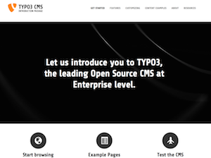

This is the landing page of all TYPO3 packages. Be welcome and make your choice between the different flavor. There is here the opportunity to make an idea of the capability of TYPO3 products. All packages have an login with different access level. Log in as admin in the Backend for in depth exploration or as an Editor to see an optimized User Interface addressing "basic" User. Notice also, that not all features are enabled such as file upload, third-party extension installation, etc... for obvious security reasons.
Experiment as much as you like but please let the system still usable for the next visitor. Next reset will happen in .

Demo:
http://demo.typo3.org/introduction
Backend login:
http://demo.typo3.org/introduction/typo3
Use "admin" and "password" as credentials
This is an example of a typical TYPO3 installation that bundles an XHTML template, the TYPO3 source and some well-known extensions. Download this if you want to try out TYPO3 and play around with it, or just to get a basic site with a predefined template up and running. To install, you need a webserver on your local machine or a hosted webserver. Unzip the package, create a Virtual Host pointing at the root of the directory, open the browser and go to the installation wizard.
There is a Forge project where issues and wishes can be reported . For instance If you would like to have your own distribution listed here demoing special features of a TYPO3 product, don't hesitate to create a ticket.